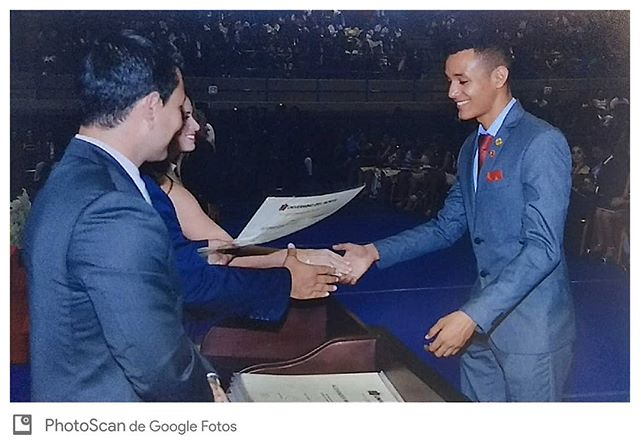

Universidad del Norte video profile
Spanish-language report about moving to Oregon State University to continue graduate studies.
Gustavo A. Araújo R. is a PhD candidate in Civil and Environmental Engineering at Stanford University (expected December 2026), where he works at the John A. Blume Earthquake Engineering Center. His research combines experimental testing, nonlinear finite-element modeling, and GPU-accelerated simulation to study reinforced concrete and low-damage mass timber–steel structural systems under earthquake loading.
I received BS and MS degrees in Civil Engineering from Universidad del Norte in Barranquilla, Colombia, where I worked with Prof. Carlos A. Arteta on reinforced concrete shear wall buildings, thin lightly reinforced concrete walls, and masonry-infilled moment-resisting frames.

BS graduation, Universidad del Norte, Barranquilla, 2018.
In 2020 I moved to the United States for an MS in Wood Science at Oregon State University. At OSU I worked with Profs. Barbara G. Simpson, Andre R. Barbosa, and Arijit Sinha on the design, experimental testing, and numerical modeling of a three-story mass timber building with pivoting walls and buckling-restrained energy dissipators, in collaboration with the TallWood Design Institute. See the OSU three-story test project for testing videos.

At the OSU structural laboratory during three-story mass timber testing, November 2022 (TallWood Design Institute).
At Stanford, my doctoral research includes NSF-funded work on GPU-accelerated nonlinear analysis and participation in the NHERI Converging Design project, including Phase II shake-table testing of a six-story mass timber building at UC San Diego in January 2024. See the six-story shake-table project for recordings from the test.


Team members on site during the final days of Phase II shake-table testing, UC San Diego, January 2024 (NHERI Converging Design).
Before graduate school, I completed a PEER summer internship at UC Berkeley (2017), working on nonlinear modeling of reinforced concrete wall buildings with OpenSees under Prof. Jack P. Moehle, and worked as an engineering intern at Ingenia Structural in Colombia.

PEER summer interns, 2017 — Pacific Earthquake Engineering Research Center, UC Berkeley.
Since 2022 I have been an active member of the Earthquake Engineering Research Institute (EERI) Student Leadership Council. I served as Seismic Design Competition (SDC) Chair (2022–2023), Lead SDC Chair (2023–2024), and Co-President (2024–2025). I also delivered an online OpenSees workshop in Spanish through Universidad del Norte and participated in the 2025 EERI Learning From Earthquakes Travel Study in Mexico City.

2025 EERI Seismic Design Competition, Berkeley, CA.


2025 EERI Learning From Earthquakes Travel Study — United Nations office (above) and Torre Reforma (below), Mexico City. Photos courtesy of EERI.
| Degree | Institution | Field | Year |
|---|---|---|---|
| PhD (in progress) | Stanford University | Civil & Environmental Engineering | Expected Dec 2026 |
| MS | Oregon State University | Wood Science | 2023 |
| MS | Universidad del Norte | Civil Engineering (Structures) | 2021 |
| BS | Universidad del Norte | Civil Engineering | 2018 |
Universidad del Norte video profile
Spanish-language report about moving to Oregon State University to continue graduate studies.
Universidad del Norte alumni profile
Spanish-language article about being admitted to Stanford to complete doctoral studies.
Email, affiliation, and professional profiles are on the Contact page.